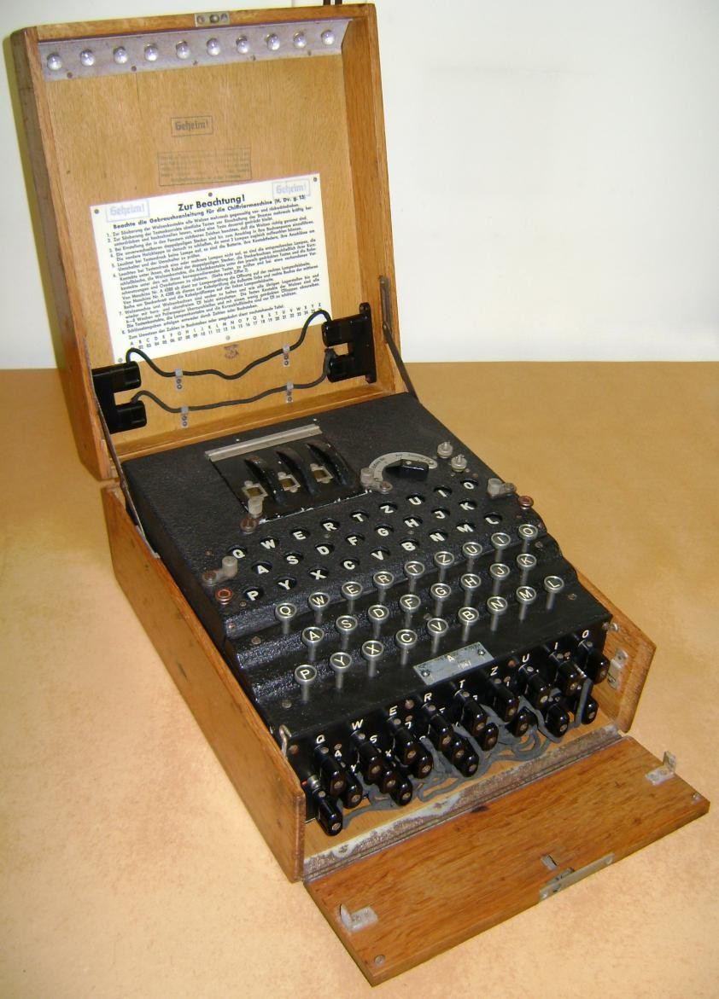

The need for secure communications for both military as civilian use became obvious in the early 1900s, with
the rise of wireless communication. The search to replace the impractical and time-consuming hand ciphers
began. In 1917, the American Edward Hugh Hebern developed a cipher machine with rotating disks, each disk
performing a substitution cipher. Hebern's idea was the base for many similar machines, developed in several
other countries.
In 1918, Engineer Arthur Scherbius patented a cipher machine using rotors. The German Navy and Foreign Offices
were approached, but were not interested. In 1923, the rights for the patents went to Chiffriermaschinen-AG, a
firm with Scherbius on the board of directors, that commercialized the machine. In 1927, Scherbius bought the
1919 patent from of a similar machine from the Dutchman Koch, in order to secure his own patent, approved in
1925.

The first cipher machine, the Handelsmaschine, was developed in 1923. It was a large and heavy machine with an
integrated typewriter and weighed about 50 Kg. In 1924, the similar Schreibende Enigma was introduced. The weight
and size of these machines made them unattractive for military use. In 1924, the development of the reflector, an
idea of Scherbius' colleague Willi Korn, made possible the compact and much lighter Enigma A and Enigma B with two
rotors, reflector, and a lamp panel that replaced the bulky typewriter. The Enigma B Mark II had three rotors and
a reflector. In 1925, the improved Enigma C was introduced, and in 1926 its successor Enigma D which had three
rotors and a reflector that could be set in one of the 26 positions.
The Enigma D was the basis for several commercial machines, in varying versions and with different rotor wirings.
These were sold across Europe to military and diplomatic services, and used before and during the Second World
War. These were the Enigma K, Enigma T or Tirpitz Enigma, Zählwerk Enigma and Enigma G that both moved the rotors
by gears instead of pawls, the Swiss-K, the Enigma Z that carried only numbers, The Reichsbahn Enigma or Railway
Enigma, and the Enigma Z. None of those machines had a plugboard, a military feature that would increase security
considerably from 1935 onwards.
Several intelligence services succeeded in breaking these civil and military Enigma versions, based on the
commercial D. The Italian Navy bought the commercial Enigma D, as did Spain during the Spanish Civil War. The
Swiss army used the Enigma K and Japan used the Enigma T, also called Tirpitz Enigma, but the Japanese also
developed their own version of the Enigma T, with the rotors placed horizontally. The messages of both models T
and K models were broken as well. The Railway Enigma, used by the German Reichsbahn in Eastern Europe, was
partially broken from 1941 onwards.